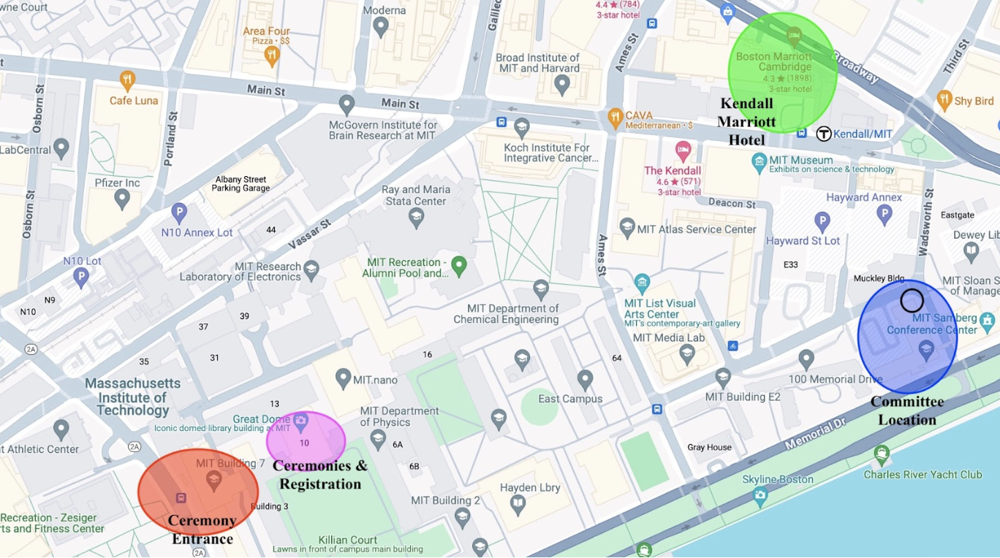

Our registration will be located in the Building 10 Memorial Lobby, right under the Great Dome. Registration
will be at one of the booths as described here.
We will have a MITMUNC banner, and will be able to provide MITMUNC XVI folders with pens and notepads upon
registration. Please arrive and register with your entire delegation. If a member of your delegation cannot
come to the conference, please inform us through email.
The Infinite is the large expanse of buildings under the same roof that make up a large majority of all
academic classrooms for undergraduates at MIT. You must enter the infinite through the Lobby 7 entrance on
77 Massachusetts Ave, Cambridge, MA 02139.
After entering, walk straight and you will see the registration
tables on the right.
Opening/Closing Ceremonies
Both opening and closing ceremonies will be in room 10-250. This is one floor above where registration takes
place.
There are elevators across from the registration tables.
Committee/Advisor Rooms
All committee rooms and the advisor room will be in building E51. This building is called the Tang Center,
and has the following address: 70 Memorial Dr, Cambridge, MA 02142.
You must enter at the entrance marked on the map below.
This is the same building where committee sessions took place last year. It is a short walk
from the Boston Marriott Cambridge in Kendall Square. Committee rooms are on floors 0, 1 and 3 of the E51.
The advisor room will be E51-061 on Friday and E51-385 on Saturday and Sunday. The advisor meeting will be
held in E51-385.
All committee rooms and advisor room assignments can additionally be found here.
MITMUNC Staff will be there to assist delegates in finding their committee rooms.
Decorum and Dress Code
We expect that all delegates who attend be respectful in their speech and all of their written material.
Although a
Model UN conference encourages lively debate, we absolutely do not tolerate any harassment or bullying of
any kind, or
discrimination upon gender, race, sexual orientation, ethnicity, or religion. We do not tolerate any sexual
harassment
or misconduct or physical violence. We reserve the right to disqualify any delegate or delegation from
awards or
participation should there be an instance of intolerable behavior. We expect that all delegates follow
standard
procedures regarding Model UN decorum, such as being respectful to their fellow delegates and chairs.
We also expect that all delegates who attend will be in professional, business attire (i.e. blazers,
blouses, pencil
skirts, slacks, dress shoes, etc.). If you wish to wear something related to your role in a crisis
committee, we
recommend you check in with your chairs through email. We additionally reserve the right to disqualify a
delegate or
delegation from awards for inappropriate attire or conduct.
Maps
Map of all key buildings and locations that are important for MITMUNC XVI:here.
Detailed MIT Campus Map:here.
Below is a map of all key buildings and locations that are important for MITMUNC XVI.
Highlighted in red is the Lobby 7 entrance to the Infinite.
Highlighted in pink is the location of registration and opening/closing ceremonies and delegate dance.
Highlighted in green is the Boston Marriott Cambridge hotel in Kendall Square.
Highlighted in blue are MITMUNC XVI committee locations (E51). You must enter the building at the corner that is circled.

Accessibility
There are wheelchair-accessible ramps that provide entry into the MIT Infinite Building to the left of the
main entrance on Massachusetts Ave. These ramps require an MIT tap access, so please let us know if there
are any members of your delegation who require assistance. There are elevators in both the MIT Infinite
Building and Building E51. If you require any further assistance or aid regarding accessibility, please
email us with your concerns.